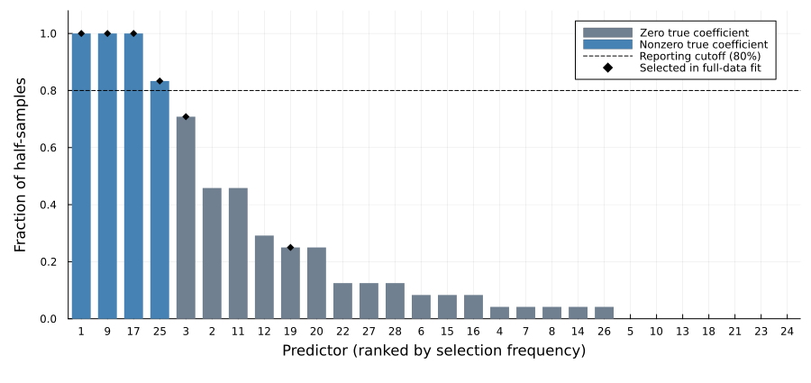

Stability selection with repeated lasso fits
A single lasso fit can give a different list of variables when a few observations change. This matters when the list guides a scientific follow-up. Two measurements that carry similar information may compete to explain the same variation. We refit the lasso on many half-samples and count how often each variable enters.

Simulate correlated measurements
Generate 120 independent observations of 28 predictors. Each set of four predictors shares a Gaussian factor, giving predictors in the same set a population correlation of 0.75. Predictors in different sets are independent. Only four coefficients are nonzero. Generate $y=X\beta^\star+\varepsilon$ with independent Gaussian noise of standard deviation 0.9 and assume a known zero intercept in each fit. The predictors have population mean zero and variance one. We use these original units in every fit, without estimating an intercept, recentering, or rescaling within a half-sample.
using LinearAlgebra, Printf, Random, ProximalBase, ProximalSolvers
n, p = 120, 28
rng = Xoshiro(829)
shared = randn(rng, n, p ÷ 4)
X = sqrt(0.75) .* repeat(shared; inner = (1, 4)) + sqrt(0.25) .* randn(rng, n, p)
truth = zeros(p)
truth[[1, 9, 17, 25]] = [1.5, -1.1, 0.75, 0.25]
y = X * truth + 0.9 * randn(rng, n);Fit the lasso on half-samples
On a set $S$ of observations, fit
\[\widehat\beta^{(S)} \in \arg\min_b \left\{ \frac{1}{2|S|}\|y_S-X_S b\|_2^2 + \lambda\|b\|_1\right\}.\]
Scaling LeastSquaresLoss by one over the sample size averages the squared-error term over the rows in the current fit. The ℓ₁ penalty shrinks coefficients and can make some exactly zero. Ordinary least squares typically keeps all predictors in this design.
Set λ to 15% of $\lambda_{\max}=\|X^\top y\|_\infty/n$, the smallest penalty for which zero solves the full-data problem. Keep λ fixed at that value, although the zero-fit threshold changes from one half-sample to another. Draw without replacement within each repeat. Different repeats can share observations. This penalty choice is for demonstration; it is not a theoretically calibrated stability-selection scheme.
function fit_lasso(X, y, λ)
b = zeros(size(X, 2))
f = (1 / length(y)) * LeastSquaresLoss(y, X)
result = solve!(b, f, NormL1(λ), CDSolver(order = :cyclic, momentum = false, tol = 1e-12))
return b, result.minimum
end
λmax = norm(X' * y, Inf) / n
λ = 0.15 * λmax
full_b, full_minimum = fit_lasso(X, y, λ)
B = 24
sample_rng = Xoshiro(193)
half_samples = [randperm(sample_rng, n)[1:(n ÷ 2)] for _ in 1:B]
samples = [(X = X[rows, :], y = y[rows]) for rows in half_samples]
fits = [fit_lasso(sample.X, sample.y, λ) for sample in samples]
counts = sum(.!iszero.(b) for (b, _) in fits)
frequencies = counts / B
reporting_threshold = 0.8
order = sortperm(frequencies; rev = true);Read the selection frequencies
For predictor $j$, estimate the frequency by
\[\widehat\pi_j=\frac{1}{B}\sum_{b=1}^B \mathbf{1}\{\widehat\beta_j^{(b)}\ne 0\}.\]
We count the solver's actual nonzero coefficients using !iszero, with no magnitude cutoff. The lasso's thresholding step produces exact zeros; very small nonzero coefficients still count as selections. The 80% cutoff below applies only to the frequencies and does not affect any fitted coefficient.
Each bar is the fraction of half-sample fits in which a coefficient was nonzero. Color indicates whether the coefficient used to generate the data was nonzero. A gray bar can correspond to a variable correlated with a signal predictor. Diamonds mark predictors selected by a single fit on all observations.
The table gives the counts and marks the variables selected in the full-data fit.
@printf("λ = %.4f, half-samples = %d\n", λ, B)
println("Predictor Signal Full fit Selected / $B Frequency")
for j in order
@printf("%9d %6s %8s %13d %9.2f\n", j, !iszero(truth[j]), !iszero(full_b[j]),
counts[j], frequencies[j])
end
println("Predictors at or above 80%: ", order[frequencies[order] .>= reporting_threshold])λ = 0.1969, half-samples = 24
Predictor Signal Full fit Selected / 24 Frequency
1 true true 24 1.00
9 true true 24 1.00
17 true true 24 1.00
25 true true 20 0.83
3 false true 17 0.71
2 false false 11 0.46
11 false false 11 0.46
12 false false 7 0.29
19 false true 6 0.25
20 false false 6 0.25
22 false false 3 0.12
27 false false 3 0.12
28 false false 3 0.12
6 false false 2 0.08
15 false false 2 0.08
16 false false 2 0.08
4 false false 1 0.04
7 false false 1 0.04
8 false false 1 0.04
14 false false 1 0.04
26 false false 1 0.04
5 false false 0 0.00
10 false false 0 0.00
13 false false 0 0.00
18 false false 0 0.00
21 false false 0 0.00
23 false false 0 0.00
24 false false 0 0.00
Predictors at or above 80%: [1, 9, 17, 25]The 80% line is a reporting convention. With 24 repeats, reaching it requires at least 20 selections. In this Julia 1.13.4 run, the three stronger signals (1, 9 and 17) enter all 24 fits. The weaker signal 25 enters 20 of 24 (83.3%), just reaching the cutoff. Predictor 3 enters the full-data lasso but only 17 of 24 half-sample fits (70.8%), below the cutoff. Its true coefficient is zero, but it shares a factor with signal 1. Correlation can make such a predictor useful in a fitted model even though it has no separate contribution in the data-generating model. Here the reporting cutoff retains the four signals and no zero-coefficient predictors; this is an observation from one simulation, not a guarantee of exact recovery.
Check the fits
From each fit's data and coefficients, recompute the objective and the least-squares gradient $d=X_S^\top(X_S b-y_S)/|S|$. A nonzero coefficient must satisfy $d_j+\lambda\operatorname{sign}(b_j)=0$. A zero satisfies $|d_j|\le\lambda$. The largest violation measures how closely the fit satisfies these conditions. We check every fit against a tolerance of $10^{-8}\lambda$ and also compare its recomputed objective with the solver's reported minimum. A converged flag alone would not provide this independent check. See Sparsity and an optimality check and the lasso row of Supported problems.
function check_fit(X, y, λ, b, reported_minimum)
residual = X * b - y
objective = sum(abs2, residual) / (2 * length(y)) + λ * sum(abs, b)
grad = X' * residual / length(y)
kkt = maximum(iszero(b[j]) ? max(abs(grad[j]) - λ, 0.0) : abs(grad[j] + λ * sign(b[j]))
for j in eachindex(b))
@assert all(isfinite, b) && all(isfinite, grad) && isfinite(objective) && isfinite(kkt)
@assert isapprox(objective, reported_minimum; rtol = 1e-10, atol = 1e-12)
@assert kkt ≤ 1e-8 * λ
return objective, kkt
end
@assert length(half_samples) == length(samples) == length(fits) == B
@assert all(rows -> length(rows) == n ÷ 2 && allunique(rows) && all(in(1:n), rows), half_samples)
@assert all(f -> 0 ≤ f ≤ 1, frequencies)
@assert isapprox(frequencies * B, counts; rtol = 0, atol = eps(Float64) * B)
full_objective, full_kkt = check_fit(X, y, λ, full_b, full_minimum)
checks = [check_fit(sample.X, sample.y, λ, b, minimum)
for (sample, (b, minimum)) in zip(samples, fits)]
@printf("Full-data objective: %.6f, KKT residual: %.2e\n", full_objective, full_kkt)
@printf("Largest half-sample KKT residual: %.2e\n", maximum(last, checks))Full-data objective: 0.992197, KKT residual: 4.72e-13
Largest half-sample KKT residual: 1.26e-12What we learned
Repeated fits reveal which selections persist when the training rows change. Correlated predictors can split selections, and weaker signals can fall below the reporting cutoff. The frequencies describe this data set, penalty and resampling design. They do not give posterior inclusion probabilities, valid p-values, or automatic control of the expected number of false positives. The assumptions and calibration behind the classical Meinshausen–Bühlmann error bound are not implemented here. This demonstration is not an exhaustive implementation of their stability-selection procedure. See Meinshausen and Bühlmann (2010).
Run julia --project=. examples/problems/stability_selection.jl for the numerical output. The documentation build runs the plotting cell with Plots in the docs environment.